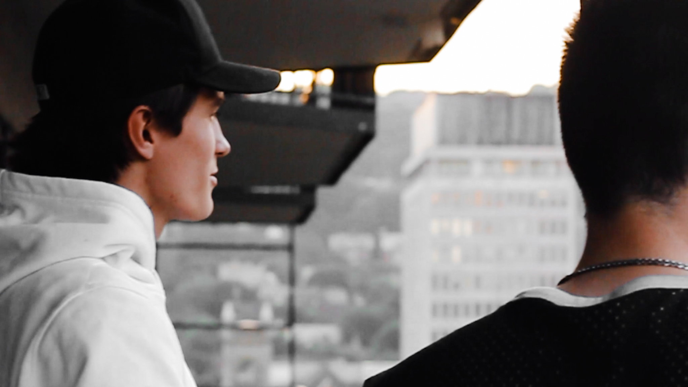

My name is Aidan Simons. I am currently 20 years old living in the dull and boring Ottawa, Ontario. I say that because I often think about how much I hate the winter season, and how the environment forces you to stay inside. I think this contributes to why I became inlove with travelng, it allows me to escape to destinations I could only dream about. For as long as I can remember I have had a camera in my hands, and an extremly unique perspective on the world.
VISUAL ARTS
I started really getting into art of photography and cinima at the age of 12 when I first saw Kill Bill Volume One, for some reason Quentin Tarantino's cinima style really turned me on to the video production industry. I even spent quite some time at Rogers TV learning everything there is to learn about production, although it was a little more fast paced than I the stuff I was into at the time since it was live television. Now, I shoot the exact oppisite as I really like to take my time to get every shot.
TO CAPTURE AN AURA
I do many things, but taking photos has always been a favourite. I have an obsession with capturing my beautiful moments in life, subconsciously fearing that I might one day forget. I have always found this to be the less likely opinion as most will tell you that you should put the camera down because you need to fully experience the situation, but I disagree, as for me I prefer to hold on to those moments that I have captured in time long term.
WHAT MAKES ME FEEL
Along the way of life I have somehow developed an intense love for cars. I can't even explain it, as I am sure most car guys can relate to. One of my favourite types of photography is automotive photography, unfortunatly this is more of a seasonal thing for me because of where I live. Ottawa puts a ridiculous amount of salt on the roads so anyone who has a nice car or a project puts them in storage for a very long time.
GRAPHIC DESIGN
I dont just take pictures, I can make custom vector assets for you to use in your next project. Anything from your prized logo, to a vector artpiece of your car, I'll be happy to make it happen.
PHOTOGRAPHY
I offer my services as a proffesional photographer to create stunning photos for your buisness or personal brand. Any size or any kind of project, I garentee to be a valuble asset and make your visions a reality.
VIDEO & MEDIA
For almost a decade I have been producing quality industry standard content for all different type of clients and partners. I have had the oppurtunity to work with some of Ottawa's best media artists and content creators to collaborate on projects and improve my skills as a videographer.

AIDAN
My name is Aidan Simons. I am currently 20 years old pursuing my goals of becoming a proffesional media artist. I activly engage in photography and film production regularily to improve my skills and to expand my work experience. I have been shooting ever since I was very young and have been imporving ever since. I take part all kinds of shoots and fashion events around Ottawa, Toronto, and Montreal. Currently I am going to school for Interactive Media design where I am also activly improving my skills in web developement and graphic design. I enjoy working with all different types of clients as I gain valuble assets and knowledge each time sourrounding all different kinds of subjects.
My favourite type of media production is photography and cinima surrounding the automotiuve community. That's right, I love taking pictures of cars. Book me today and we can get to work. I can help improve your buisness by establishing your brand theme. I provide valuble assets for you and your company to use to help solidy the brand as a whole. Logos, banners, advertisments, photography, marketing, or just media coverage of any kind, I can make your vision come to life.